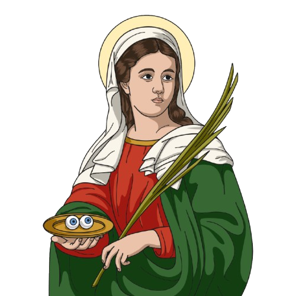

✠
Próximos Eventos
Acompanhe os eventos e celebrações especiais da nossa paróquia


Arquidiocese de Campinas/SP
Jardim dos Oliveiras - Campinas/SP
25 anos iluminando caminhos com fé e amor

Santa Luzia, cujo nome de origem latina remete à luz, é uma das santas mais queridas da Igreja, sendo invocada como a protetora dos olhos. Nascida em uma família rica de Siracusa, na Itália, recebeu uma sólida formação cristã e fez um voto de virgindade perpétua. Após uma peregrinação ao túmulo de Santa Águeda, onde obteve a cura de sua mãe, Luzia recebeu permissão para manter sua castidade e distribuir seu dote milionário entre os pobres. No entanto, seu ex-noivo, inconformado com o cancelamento do matrimônio e com a doação da fortuna, denunciou-a às autoridades romanas durante a perseguição de Diocleciano.
Levada a julgamento em 303, Santa Luzia demonstrou uma resistência milagrosa: mesmo sob ordens para ser levada a um prostíbulo, seu corpo tornou-se tão pesado que dez homens não conseguiram movê-la. Ela sobreviveu a torturas com resina e azeite ferventes, vindo a falecer apenas em 304, após um golpe de espada na garganta. A tradição oral narra que ela teria arrancado os próprios olhos para não renegar sua fé, motivo pelo qual a arte e a literatura — incluindo "A Divina Comédia", de Dante Alighieri — a imortalizaram como a graça iluminadora. Sua existência histórica foi confirmada em 1894 por uma inscrição em grego antigo em seu sepulcro, e hoje suas relíquias repousam na Catedral de Veneza, com sua festa celebrada mundialmente no dia 13 de dezembro.
Paróquia Santa Luzia - Jardim dos Oliveiras | Arquidiocese de Campinas/SP
Atendimento (Murilo ou Lurdinha)
Rua René Fernandes, n. 71
Bairro: Jardim dos Oliveiras
Tel.: (19) 3271-4495 / (19) 99241-0546
Horários:
Segunda: 13h às 18h
Terça a sexta: 9h às 12h; 13h às 18h
Sábado: 8h às 12h
Atendimento do padre / Confissões
Terças e sextas-feiras: 15h às 17h
Quartas-feiras: 15h às 17h
Atendimento a enfermos e idosos nas casas (agendar na Secretaria Paroquial)
Carregando...
Carregando o Evangelho do dia...
Carregando...
Carregando o salmo do dia...
Acompanhe os eventos e celebrações especiais da nossa paróquia
Rua René Fernandes, n. 71 - Jardim dos Oliveiras
7h: Missa
10h: Missa
7h30: Missa com Novena de N. Sra. do Perpétuo Socorro
1ª sexta: 7h30 Missa do Sagrado Coração
19h: Terço dos Homens
18h30: Missa
9h: Aula de Violão
10h: Técnica Vocal
Sua contribuição ajuda a manter nossa paróquia e suas comunidades. Deus abençoe sua generosidade!
CNPJ
44.588.960/0133-30
Nome
Paróquia Santa Luzia
Jardim dos Oliveiras - Campinas/SP
PIX
44588960013330
"Cada um contribua segundo o propósito do seu coração, não com tristeza ou por necessidade; porque Deus ama a quem dá com alegria." — 2 Coríntios 9:7
Redirecionando para o WhatsApp...

"Pela intercessão de Santa Luzia, que a luz da fé ilumine nossos caminhos e que possamos enxergar a presença de Deus em todas as coisas."
📅 Festa: 13 de dezembro